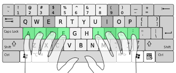
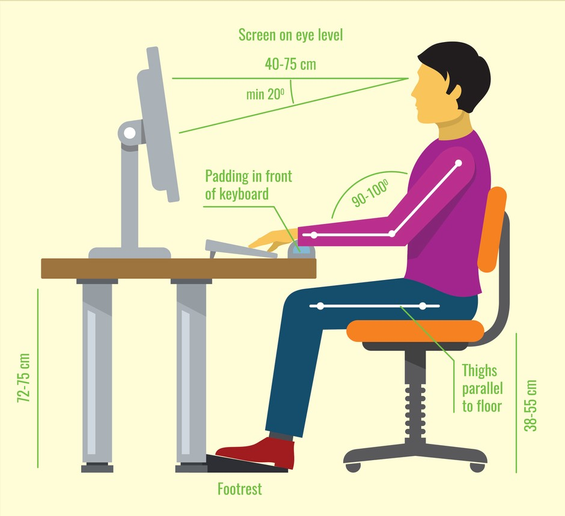
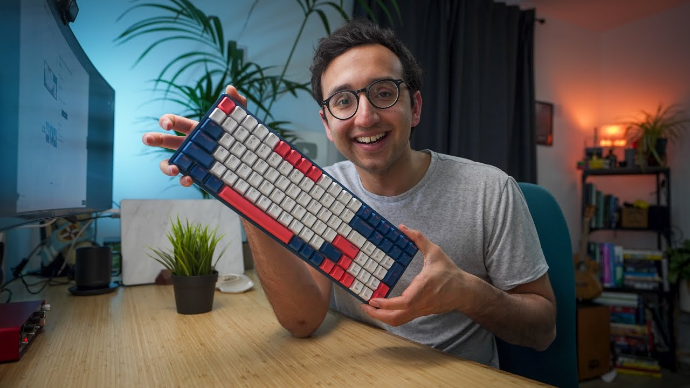

These website is for tips and resources for Improving Your Typing Speed & Accuracy.
Why is it important to learn keyboarding?
-
It frees up cognitive energy so you focus on the ideas instead of just the language required to
articulate
them. Moreover, learning keyboarding improves accuracy and can help with decoding and sight-reading
skills
for children and adults who struggle with specific learning difficulties.
- To complete your work faster it is important to develop typing skills. Typing helps you to work
comfortably
on the computer, it aids in communicating with colleagues and customers, creating documents, and finding
new
information.
-
Best collection of typing resources which can help to increase the productivity and efficiency of your
typing.
Here are the some of the my collection of touch typing websites
-
TypingClub
How
Does it Work?
-
Keep practicing each lesson until you get all five stars. It really doesn't take much to learn,
a few
minutes a day for one to two weeks and you will be a pro!
-
It is web based and highly effective. TypingClub is (and will always be) free for both
individuals
and schools. There is an optional paid school edition.
-
By clicking the button below, you can visit the website TypingClub.
TypingClub
-
Keybr
How
Does it Work?
-
This web application will help you to learn touch typing which means typing through muscle
memory without using your eyesight to find the keys. It can improve your typing speed and
accuracy dramatically
-
No boring repetitive exercises. Unlike most other typing tutors, this application does not force
you to repeat the same lessons like ‘jjf jjk jjf jjk’ over and over again. This is very annoying
and contributes very little to your overall learning.
- This application uses a sophisticated computer algorithm to generate typing lessons that match
your skill level. These lessons consist of random words generated using a subset of the full
alphabet of letters. The size of the subset and individual letter frequency is controlled by the
algorithm, which provides you with the best learning experience.
- When the algorithm includes a new letter to the current subset, the frequency of this letter is
artificially boosted so that it will be included in every generated word of a lesson.
The algorithm can also artificially rearrange letter frequencies, placing an emphasis on the
letters with the worst time-to-type metric.
This means you will always be typing the letters that you are least familiar with.
-
By clicking the button below, you can visit the website Keybr.
Keybr
-
Typing.com
How
Does it Work?
-
It is the website which has practice in different category
-
Engaging Curriculum
Students learn valuable technology fundamentals – designed by experts for students of
every skill level.
-
Gamified Learning
Engage students with fun typing games, interactive lessons, and achievements
-
Make it Your Own
Enhance learning by creating your own lessons for cross-curricular
reinforcement.
-
Multilingual Content and Instruction
Instructions and lessons available in Spanish or English – you choose!
-
By clicking the button below, you can visit the website Typing.com.
Typing.com
-
10fastfingers
How
Does It Work?
-
It is my favroite website off all. because it works for 1min , In that time it will tell u how
much
many words u have processed in a minute, It is called WPM(Words per minute).
-
If you want a quick way to test your typing speed, try out our 1-minute free Typing test
(available
in over 40 languages). You can quickly see how fast you can type and compare your result with
your
friends.
- One huge benefit: The more you use our typing game, the faster you will be able to type as the
typing test uses the top 200 words of each language. If you are able to type the most frequent
words
faster, you will be able to type everything else faster as well!
-
If you want to steadily improve your typing speed or train some specific typing skills you
should
check out the typing practice page. Improve your typing speed with practicing the Top 1000 words
of
each language (while unlocking those sweet, sweet stars), or challenge your typing skills with a
user-submitted text. The practice mode is currently under development, more features & modes
will be
added in the near future.
-
An average professional typist types usually in speed of 65 to 75 WPM. More advanced positions
require 80 to 95 ( usaually the minimum required for dispatch positions and other time-sensitive
typing jobs). There are also some advanced typists and work that requires speeds above 120 WPM.
-
By clicking the button below, you can visit the website 10fastfingers.
10fastfingers
Here are three tips to keep you up to speed on your keyboard skills.
1.) Use the correct starting position

-
While there are plenty of people who can type quickly with just two fingers, typing with all ten fingers
dramatically increases your accuracy and speed.
Your keyboard is made up of 101 different keys. If you type in a way that each finger is responsible for
specific keys, your fingers move as little as possible. You conserve energy, build muscle memory, and
type faster.
-
When practicing your typing skills, it’s important to use proper hand placement. To start, keep your
fingers
positioned over the home row keys (left hand over the A, S, D, and F keys, and the right hand over
the J, K,
L, and ; keys), with your thumbs hovering over the space bar. From here, you can move your fingers
slightly
to reach neighboring keys. Your hands should always return this starting position.
-
These conventions are meant to help you familiarize yourself with the keyboard. As you become more
experienced, you can experiment with different variations of this starting position to find the
placement
that is most comfortable and natural for you.
2.) Maintain good posture

Though you might expect manual labor to be more trying on your body, for some, extensive sitting and
keyboard work can be even more damaging. That is why having proper posture in front of your computer is key.
So what does proper typing posture look like?
-
Sit up straight with your feet flat on the floor. Be careful to avoid crossing your legs under you or
propping them up under your desk.
-
You want your elbows to have a 90-degree angle with your arms close to your side. Adjust your chair
height if you find your shoulders hunching.
-
Fingers should be curved over the keyboard with your thumbs near the space bar. Avoid resting your
wrists on the computer while typing, using the wrist pad for breaks only.
-
And finally keep your head and neck facing your screen. If you are using two screens, try to avoid
excessively turning and tilting.
3.)Practice, Practice, Practice
-
Nothing is mastered overnight, and in order to really improve your typing accuracy and speed, you need
to practice every day.
-
There are many websites(as I menstioned above) that offer free typing skills tests and practice.
-
It’s important to take your time with these typing exercises and assessments. Attempting to rush through
them will only result in more errors at first. Trust that your speed will improve naturally as you
become more familiar with the keyboard.
-
Improving your typing skills will not only make your student life much easier, it will benefit you in
your future career as well. It might take a lot of practice to see improvement, but don’t give up.
You’ll be typing like a pro in no time!
-
Your fingers learn where each key is placed and are able to find them without assistance from your eyes.
Once you can find each key without looking at the keyboard, you'll find your typing speed increases
exponentially, and the more you practice, the faster you will get.

Suggestion
Here is the video of a YouTuber, my favorite YouTuber, which explains why typing is important and how we
can improve it.
Who has reached nearly 180+ WPM.
Watch Video
About
Rameshchandra Pola